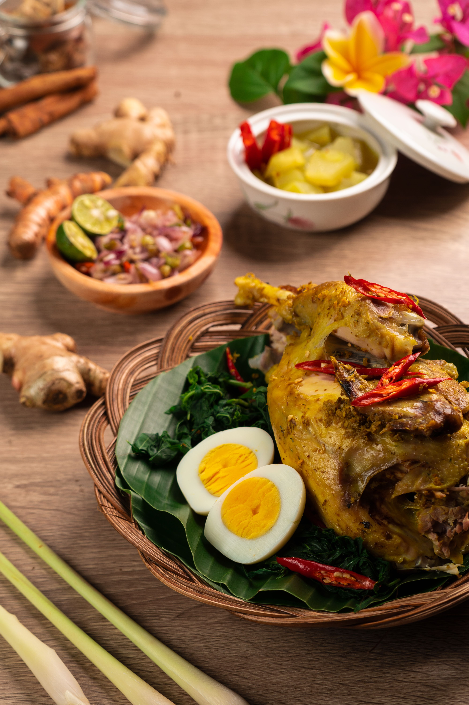

“Ayam Betutu: Cita Rasa Rempah dan Kekayaan Kuliner Tradisional Bali”
Ayam Betutu, salah satu makanan tradisional khas Bali. Hidangan ini berupa ayam berbumbu rempah seperti kunyit, jahe, lengkuas, bawang, dan cabai yang dimasak hingga bumbunya meresap. Ayam Betutu biasanya disajikan bersama sayuran, telur rebus, sambal, dan nasi. Makanan ini memiliki cita rasa gurih, kaya rempah, serta dapat terasa pedas. Ayam Betutu menjadi salah satu kuliner khas Bali yang mencerminkan kekayaan bahan pangan, cita rasa, dan tradisi kuliner masyarakat Bali.